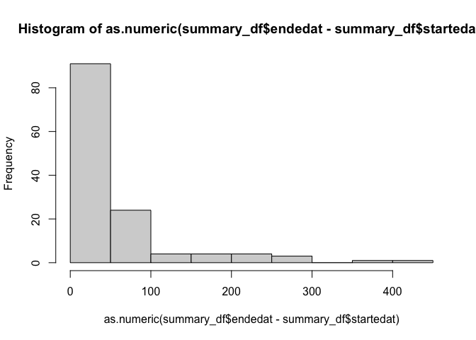

This package simply provides a set of tools to work with the Bioconductor build system reports and for creating structured data from those reports.
The Bioconductor build system is a complex system that builds and checks all Bioconductor packages on a regular basis. The build system produces a large set of reports for each build and those reports are packaged up in a report.tgz file. This package provides a set of tools to work with those reports and to cache them locally for further analysis.
You can install the development version of BiocBuildDB from GitHub with:
# install.packages("BiocManager")
BiocManager("seandavi/BiocBuildDB")To process all new build reports (those that changed since the last processing), you can use the following code:
library(BiocBuildDB)
reportdb_filename = 'reportdb.csv'
dir.create('report_dir')
process_all_new_reports(reportdb_filename, 'report_dir')If the reportdb.csv file does not exist, it will be created. If it does exist, it will be read and updated after successfully localizing (copying) the new report.tgz files to the report_dir directory.
The process_all_new_reports function will untar each report.tgz file and create a set of tables from the report directory. The tables will be written to files in the report_dir directory with the md5 hash of the report directory as a prefix.
The result will be a report_dir directory with a set of csv files containing the tables from the report directories as well as the report.tgz files. Related files are named with the same md5 hash prefix of the report.tgz file.
An example resulting directory might look like:
-rw-r--r-- 1 seandavis staff 472K Feb 2 11:20 2cc2a659a35d607f71655f3c9c9e4283-build_summary.csv.gz
-rw-r--r-- 1 seandavis staff 87K Feb 2 11:20 2cc2a659a35d607f71655f3c9c9e4283-info.csv.gz
-rw-r--r-- 1 seandavis staff 37K Feb 2 11:20 2cc2a659a35d607f71655f3c9c9e4283-propagation_status.csv.gz
-rw-r--r-- 1 seandavis staff 50M Feb 2 11:18 2cc2a659a35d607f71655f3c9c9e4283-report.tgz
-rw-r--r-- 1 seandavis staff 2.9K Feb 2 11:20 2e6b75f554d439ba3dc993e77862a973-build_summary.csv.gz
-rw-r--r-- 1 seandavis staff 2.2K Feb 2 11:20 2e6b75f554d439ba3dc993e77862a973-info.csv.gz
-rw-r--r-- 1 seandavis staff 514B Feb 2 11:20 2e6b75f554d439ba3dc993e77862a973-propagation_status.csv.gz
-rw-r--r-- 1 seandavis staff 202K Feb 2 11:18 2e6b75f554d439ba3dc993e77862a973-report.tgz
-rw-r--r-- 1 seandavis staff 497K Feb 2 11:20 354e509ee0e71215f7669fda8bad0246-build_summary.csv.gz
-rw-r--r-- 1 seandavis staff 94K Feb 2 11:20 354e509ee0e71215f7669fda8bad0246-info.csv.gz
-rw-r--r-- 1 seandavis staff 40K Feb 2 11:20 354e509ee0e71215f7669fda8bad0246-propagation_status.csv.gz
-rw-r--r-- 1 seandavis staff 70M Feb 2 11:18 354e509ee0e71215f7669fda8bad0246-report.tgzAfter running this, you may want to sync the report_dir directory with a cloud storage service such as Amazon S3 or Google Cloud Storage for safe keeping.
You shouldn’t need to use this functionality directly, but it is here to show how the package works and some example output in the tables.
Show an example of how to work with a report.tgz file.
library(BiocBuildDB)
report_tgz <- example_report_tgz()
report_dir <- untar_report_tgz(report_tgz)
summary_df <- get_build_summary_table(report_dir)
info_df <- get_info_table(report_dir)
prop_df <- get_propagation_status_table(report_dir)Show the first few rows of each table.
head(summary_df)
#> # A tibble: 6 × 9
#> package node stage version status startedat endedat
#> <chr> <chr> <chr> <chr> <chr> <dttm> <dttm>
#> 1 AHCytoBands nebb… buil… 0.99.1 OK 2024-01-17 10:31:13 2024-01-17 10:31:14
#> 2 AHCytoBands nebb… chec… 0.99.1 OK 2024-01-17 10:35:23 2024-01-17 10:35:31
#> 3 AHCytoBands nebb… inst… 0.99.1 OK 2024-01-17 10:30:08 2024-01-17 10:30:11
#> 4 AHEnsDbs nebb… buil… 1.1.10 OK 2024-01-17 10:31:13 2024-01-17 10:32:01
#> 5 AHEnsDbs nebb… chec… 1.1.10 OK 2024-01-17 10:35:23 2024-01-17 10:37:24
#> 6 AHEnsDbs nebb… inst… 1.1.10 OK 2024-01-17 10:30:23 2024-01-17 10:30:49
#> # ℹ 2 more variables: command <chr>, report_md5 <chr>
colnames(summary_df)
#> [1] "package" "node" "stage" "version" "status"
#> [6] "startedat" "endedat" "command" "report_md5"
head(info_df)
#> # A tibble: 6 × 9
#> Package Version Maintainer MaintainerEmail git_url git_branch git_last_commit
#> <chr> <chr> <chr> <chr> <chr> <chr> <chr>
#> 1 AHCytoB… 0.99.1 Michael L… michafla at ge… https:… RELEASE_3… 821428c
#> 2 AHEnsDbs 1.1.10 Johannes … johannes.raine… https:… RELEASE_3… 1cf652d
#> 3 AHLRBas… 0.99.3 Koki Tsuy… k.t.the-answer… https:… RELEASE_3… c0e6555
#> 4 AHMeSHD… 0.99.6 Koki Tsuy… k.t.the-answer… https:… RELEASE_3… 052e156
#> 5 AHPathb… 0.99.5 Kozo Nish… kozo.nishida a… https:… RELEASE_3… a90bfd4
#> 6 AHPubMe… 0.99.8 Koki Tsuy… k.t.the-answer… https:… RELEASE_3… f43d98f
#> # ℹ 2 more variables: git_last_commit_date <dttm>, report_md5 <chr>
colnames(info_df)
#> [1] "Package" "Version" "Maintainer"
#> [4] "MaintainerEmail" "git_url" "git_branch"
#> [7] "git_last_commit" "git_last_commit_date" "report_md5"
head(prop_df)
#> # A tibble: 6 × 4
#> package process propagate report_md5
#> <chr> <chr> <chr> <chr>
#> 1 AHCytoBands source UNNEEDED, same version is already published f8fd2897c…
#> 2 AHEnsDbs source UNNEEDED, same version is already published f8fd2897c…
#> 3 AHLRBaseDbs source NO, version to propagate (0.99.3) is lower t… f8fd2897c…
#> 4 AHMeSHDbs source NO, version to propagate (0.99.6) is lower t… f8fd2897c…
#> 5 AHPathbankDbs source UNNEEDED, same version is already published f8fd2897c…
#> 6 AHPubMedDbs source NO, version to propagate (0.99.8) is lower t… f8fd2897c…
colnames(prop_df)
#> [1] "package" "process" "propagate" "report_md5"Present a histogram of build times (in seconds) for the packages in the example build report.
hist(as.numeric(summary_df$endedat - summary_df$startedat))